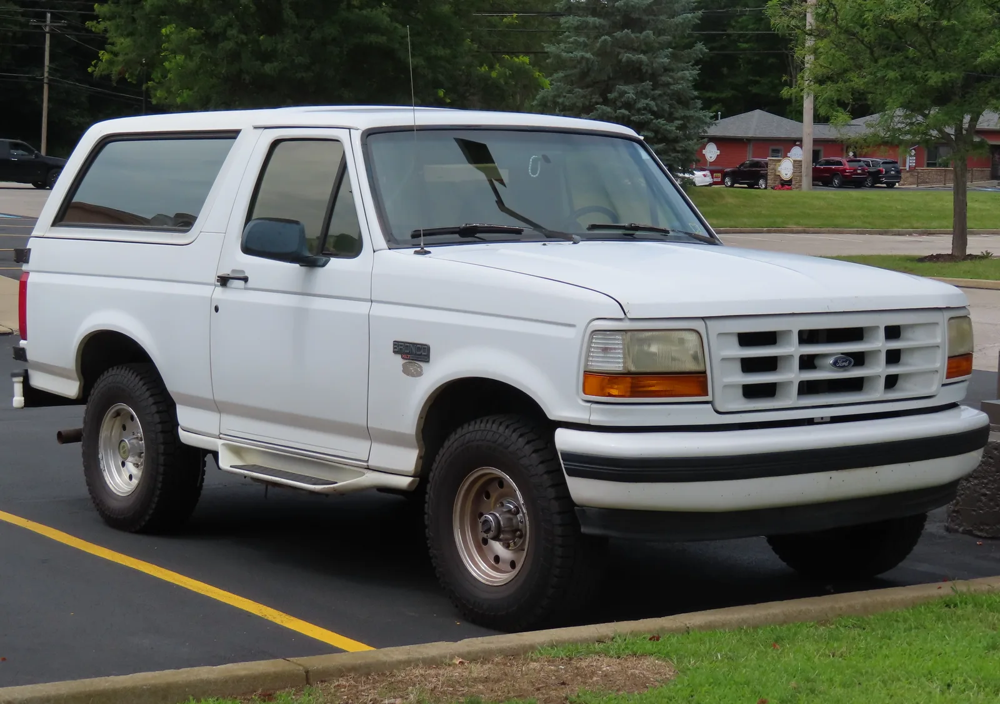
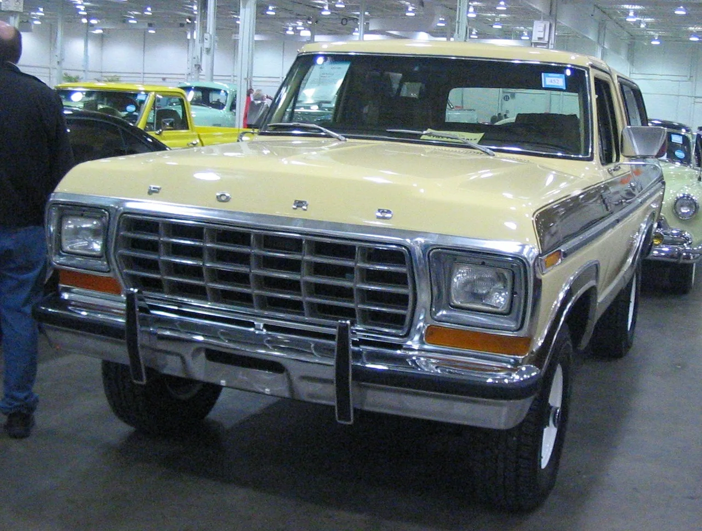

▲ 1966년 처음 등장한 포드 브롱코 1세대. 지프 CJ, 인터내셔널 스카우트에 맞서기 위해 만들어졌다 ⓒ Wikimedia Commons
1. 지프에 맞선 포드의 답, 브롱코 60주년
포드 브롱코가 2026년으로 데뷔 60주년을 맞았습니다. 1966년 처음 등장한 브롱코는 당시 오프로드 시장을 사실상 지배하고 있던 지프 CJ, 인터내셔널 하베스터의 스카우트에 맞서 포드가 내놓은 정면 대응 모델이었습니다.
작고 단단한 바디온프레임 구조에 4륜구동을 얹은 브롱코는 등장과 동시에 오프로드 마니아들의 지지를 얻었습니다. 이후 30년간 다섯 번의 세대 교체를 거치며 미국 SUV 문화의 한 축을 담당했지만, 1996년을 끝으로 단종의 길을 걸었습니다.
2. 세대별 역사 한눈에 보기
브롱코의 60년 역사는 크게 '단종 전 5세대'와 '부활 이후 6세대'로 나뉩니다. 세대별 특징을 정리하면 다음과 같습니다.
| 세대 | 생산 기간 | 특징 |
|---|---|---|
| 1세대 | 1966~1977 | 초기 오리지널 모델, 작고 단순한 박스형 차체 |
| 2세대 | 1978~1979 | 포드 F시리즈 픽업 플랫폼 기반으로 차체 확대 |
| 3세대 | 1980~1986 | 연비 규제에 대응해 경량화·공기역학 개선 |
| 4세대 | 1987~1991 | 플러시 헤드램프 등 공기역학 중심의 '브릭 노즈' 디자인 |
| 5세대 | 1992~1996 | 부드러운 곡선 디자인 적용, 단종 전 마지막 세대 |
| 공백기 | 1997~2020 | 25년간 단종 |
| 6세대 | 2021~현재 | 레트로 감성과 현대적 오프로드 기술을 결합해 부활 |
1978~1979년의 2세대는 포드 F시리즈 픽업트럭 플랫폼을 그대로 가져와 차체를 키운 것이 특징입니다. 이후 3~4세대는 오일쇼크 이후 강화된 연비 규제에 맞춰 공기역학적인 디자인을 적극 도입했고, 1987년형부터는 헤드램프를 차체와 매끈하게 맞춘 이른바 '브릭 노즈' 스타일이 자리 잡았습니다.

▲ 1995년형 포드 브롱코 XLT. 1996년을 끝으로 단종된 5세대 모델로, 이후 25년의 공백을 앞둔 마지막 세대다 ⓒ Wikimedia Commons
3. CarBuzz가 꼽은 '역대 가장 상징적인 브롱코 10대'
미국 자동차 매체 카버즈(CarBuzz)는 60주년을 기념해 '역대 가장 상징적인 브롱코 10대'를 선정했습니다. 흥미로운 점은 목록 대부분이 일반 양산 트림이 아니라 컨셉카와 소량 생산 스페셜 에디션으로 채워졌다는 것입니다.
| 연식 | 모델 | 비고 |
|---|---|---|
| 1966 | 브롱코 듄 더스터 컨셉 | 지붕을 없앤 로드스터 형태, 조지 바리스 제작 |
| 1969 | 보스 브롱코 컨셉 | 350큐빅인치 V8(290마력), 카크래프트 제작 고성능 시제차 |
| 1971~1975 | '바하 브롱코' 스트로프 에디션 | 바하 1000 우승 기념 한정판, 450~650대 생산 |
| 1977~1981 | 프리 휠링 에디션 | 3색 스트라이프가 특징인 스페셜 에디션 |
| 1988 | 브롱코 DM-1 컨셉 | 공력 중심의 '젤리빈' 디자인, 헤드업 디스플레이 등 미래형 사양 탑재 |
| 1992 | 브롱코 보스 | 5.0L V8, 접이식 적재함 커버를 갖춘 컨셉 |
| 2022 | 브롱코 랩터 | 3.0L 트윈터보 V6, 418마력, 현행 최고 성능형 |
| 2026 | 브롱코 로드스터 컨셉 | 60주년 기념, 1966년 오리지널 로드스터를 현대적으로 재해석 |
특히 1971년 '바하 브롱코' 스트로프 에디션은 실제 레이싱 성적에서 출발한 모델이라는 점에서 눈에 띕니다. 프라이빗 레이서 빌 스트로프가 이끈 브롱코 팀이 바하 1000 레이스에서 연속 우승을 거두자, 이를 기념해 만들어진 시판용 한정판입니다.

▲ 1979년형 포드 브롱코 2세대. 1978년부터 포드 F시리즈 픽업 플랫폼을 그대로 가져와 차체가 눈에 띄게 커졌다 ⓒ Wikimedia Commons
4. 지금의 브롱코를 대표하는 랩터
60년 헤리티지를 잇는 현행 모델 가운데 가장 상징적인 존재는 단연 브롱코 랩터입니다. 2022년형으로 처음 등장한 랩터는 3.0리터 트윈터보 V6 엔진에서 418마력, 440lb-ft(약 60kg·m)의 토크를 냅니다.
| 엔진 | 3.0L 트윈터보 V6 |
|---|---|
| 최고출력 | 418마력 |
| 최대토크 | 440lb-ft |
| 펜더 폭 | 표준 모델 대비 9인치 이상 확장 |
| 타이어 | 37인치 BF굿리치 |
| 최저지상고 | 13.1인치 |
| 주행모드 | G.O.A.T. 지형 모드 7종 + 바하(Baja) 모드 |
37인치 대형 타이어를 수용하기 위해 펜더 폭을 9인치 이상 넓히고, 전용 '바하' 주행 모드까지 넣은 것은 브롱코가 처음 태어났을 때부터 지켜온 오프로드 지향성을 계승하는 방식입니다. 1971년 바하 1000 우승 기념 에디션의 정신이 반세기 뒤 랩터의 이름으로 이어지고 있는 셈입니다.

▲ 현행 6세대 브롱코의 최상위 오프로드 트림 랩터. 60년 헤리티지를 잇는 현재진행형 모델이다 ⓒ Wikimedia Commons
5. 25년의 공백, 그리고 부활
1996년 5세대를 끝으로 단종된 브롱코는 이후 25년 동안 자리를 비웠습니다. 그사이 오프로드 SUV 시장은 지프 랭글러가 사실상 독점하다시피 했고, 소비자들 사이에서는 "브롱코가 돌아와야 한다"는 목소리가 꾸준히 이어졌습니다.
포드는 2021년, 완전히 새로운 6세대 브롱코로 이 공백을 메웠습니다. 옛 1세대의 둥근 헤드램프와 각진 펜더 실루엣 같은 레트로 디자인 요소를 현대적으로 재해석하면서도, 탈착식 도어·지붕, 강력한 오프로드 하드웨어를 갖춰 랭글러의 직접적인 경쟁자로 자리매김했습니다.
60주년을 맞아 공개된 '브롱코 로드스터' 컨셉은 이런 흐름의 연장선입니다. 도어와 지붕, 롤케이지까지 걷어낸 1966년 오리지널 로드스터를 오마주하면서, 2.3리터 에코부스트 엔진과 수동변속기를 얹어 "가장 순수한 형태의 오픈탑 재미"를 강조했습니다.
6. 정리
포드 브롱코는 1966년 지프에 맞선 대항마로 태어나 2026년 60주년을 맞았습니다. 1세대부터 5세대까지 30년간 이어지다 1996년 단종됐고, 25년의 공백 끝에 2021년 6세대로 화려하게 부활했습니다.
카버즈가 꼽은 '역대 가장 상징적인 브롱코 10대'는 양산차보다 바하 1000 우승 기념 에디션, DM-1 컨셉 같은 실험적인 모델들로 채워졌다는 점이 특징입니다. 그리고 그 헤리티지는 지금 418마력을 내는 브롱코 랩터와 60주년 기념 로드스터 컨셉으로 이어지고 있습니다.